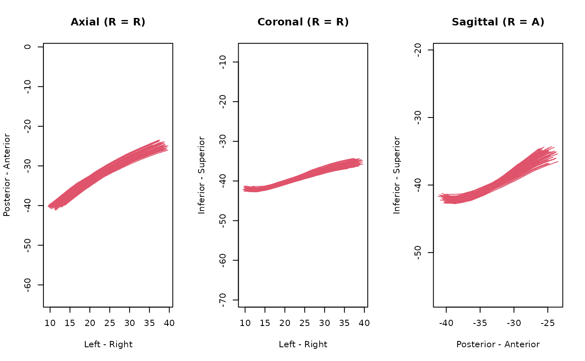

This reader uses 'Python' 'vtk' package, supports '.vtk',
'.vtp', '.pvtp', '.vtpb' formats.
Arguments
- file, con
file path to the
'VTK'file, the format will be inferred from the file extension (with default'.vtk')- x
An
imaging-streamlinesobject- binary
for legacy
'.vtk'file only, whether to store the data as binary file or 'ASCII' plain text; default is true (binary).
Value
io_read_vtk_streamlines returns an
imaging-streamlines object, while
io_write_vtk_streamlines writes the data to file
Examples
# This example shows how to convert tck to vtk
# run `ieegio_sample_data("streamlines/CNVII_R.tck")` to
# download sample data
if( ieegio_sample_data("streamlines/CNVII_R.tck", test = TRUE) ) {
path <- ieegio_sample_data("streamlines/CNVII_R.tck")
streamlines <- as_ieegio_streamlines(path)
# write to vtk
tfile <- tempfile(fileext = ".vtk")
io_write_vtk_streamlines(streamlines, con = tfile)
# read
vtk_streamlines <- io_read_vtk_streamlines(tfile)
# compare
plot(streamlines)
plot(vtk_streamlines)
# 0 0
range(streamlines[[1]]$coords - vtk_streamlines[[1]]$coords)
}
#> * Installing Miniconda -- please wait a moment ...
#> * Downloading 'https://repo.anaconda.com/miniconda/Miniconda3-latest-Linux-x86_64.sh' ...
#> + /usr/bin/bash /tmp/RtmpjgyYJM/Miniconda3-latest-Linux-x86_64.sh -b -p '/home/runner/.local/share/r-rpymat/miniconda'
#> + /home/runner/.local/share/r-rpymat/miniconda/bin/conda create --yes --name r-reticulate 'python=3.10' numpy --quiet -c conda-forge
#> * Miniconda has been successfully installed at "~/.local/share/r-rpymat/miniconda".
#> + /home/runner/.local/share/r-rpymat/miniconda/bin/conda create --yes --prefix /home/runner/.local/share/r-rpymat/miniconda/envs/rpymat-conda-env 'python=3.10' --quiet -c conda-forge
#> + /home/runner/.local/share/r-rpymat/miniconda/bin/conda install --yes --prefix /home/runner/.local/share/r-rpymat/miniconda/envs/rpymat-conda-env -c conda-forge numpy
#> + /home/runner/.local/share/r-rpymat/miniconda/bin/conda install --yes --prefix /home/runner/.local/share/r-rpymat/miniconda/envs/rpymat-conda-env -c conda-forge vtk

#> [1] 0 0